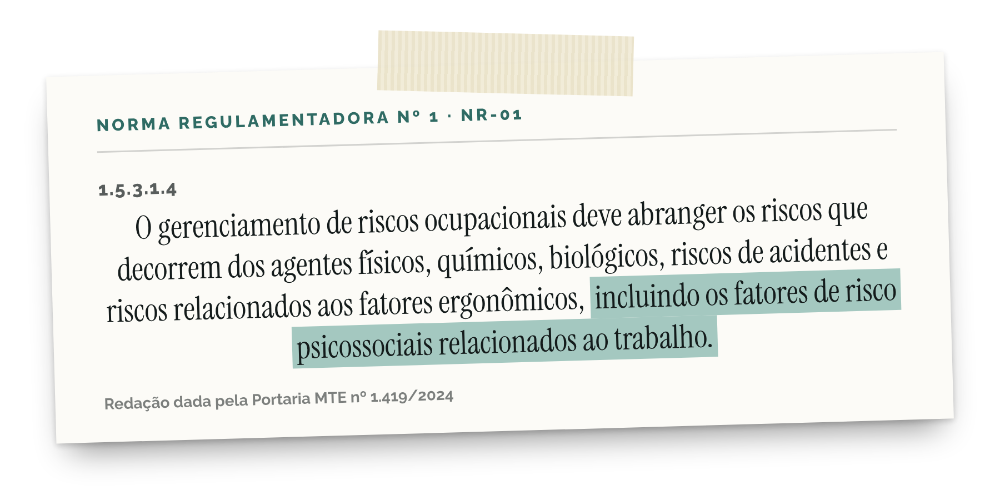
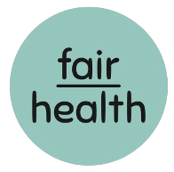

A norma
NR-01
Desde maio de 2026, a NR-01 pede que a empresa identifique e gerencie os riscos psicossociais, junto com os outros riscos ocupacionais.

Fonte: NR-01, Ministério do Trabalho e Emprego. Item 1.5.3.1.4 na redação da Portaria MTE nº 1.419/2024; vigência adiada para maio de 2026 pela Portaria MTE nº 765/2025.
E agora, RH?
Fale com a gente
pelo link da bio.
e leve o Escritório do Cuidado
para a sua empresa.
Precisa de ajuda agora? CVV 188.

@fairhealth.br